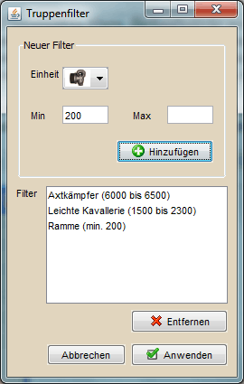

Truppenfilterung |
|
|  | |
Die Truppenfilterung erlaubt es im Angriffsplaner und im Re-Timer gewählte Dörfer für mögliche Angriffe herauszufiltern, in denen laut internen Truppeninformationen nicht genügen Off vorhanden ist. Voraussetzung für die Truppenfilterung sind aktuell importierte Truppeninformationen. Im Screenshot sieht man oben Links die Einstellung für einen einzelnen Filter nach einer Einheit. Man wählt zuerst die Einheit und dann die Anzahl nach der man filtern möchte. Will man nur mindestens eine bestimmte Anzahl (siehe Axtkämpfer im Beispiel), trägt man nur unter "Min" einen Wert ein. Will man nicht mehr als einen Maximalwert von einer Einheit haben (siehe Katapult im Beispiel), so trägt man seinen Wert nur bei "Max" ein. Will man Truppenzahlen zwischen zwei Werten, so trägt man dagegen bei "Min" und "Max" einen Wert ein. Die Checkbox "Strenge Filterung" bewirkt bei der Filterung, dass alle Filterkriterien erfüllt sein müssen damit ein Dorf nicht entfernt wird. Ist diese Option deaktiviert genügt es, wenn eine Bedingung erfüllt ist. Auf der rechten Seite gibt es noch die Möglichkeit, Filtersätze zu speichern. Dafür gibt man im Textfeld den Namen für den Filtersatz an und klickt den Button daneben. Einen Filtersatz laden kann man über den rechten Button, gewählte Einträgt löscht man über ENTF. |